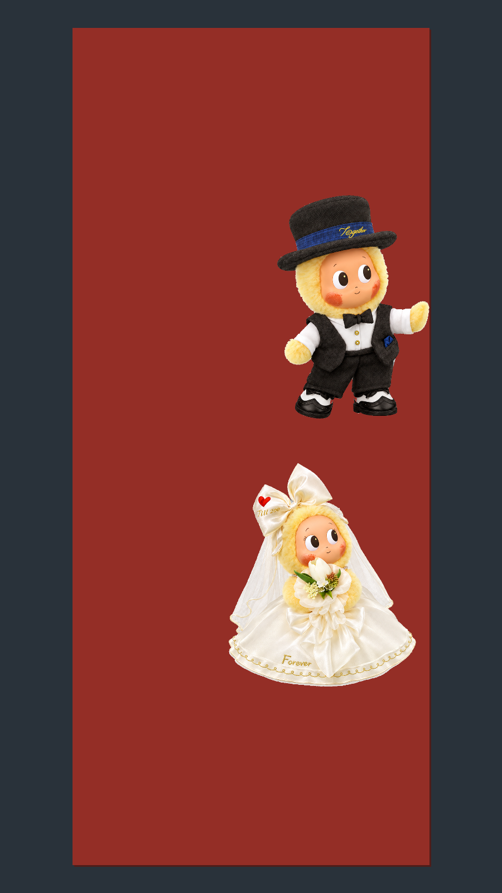
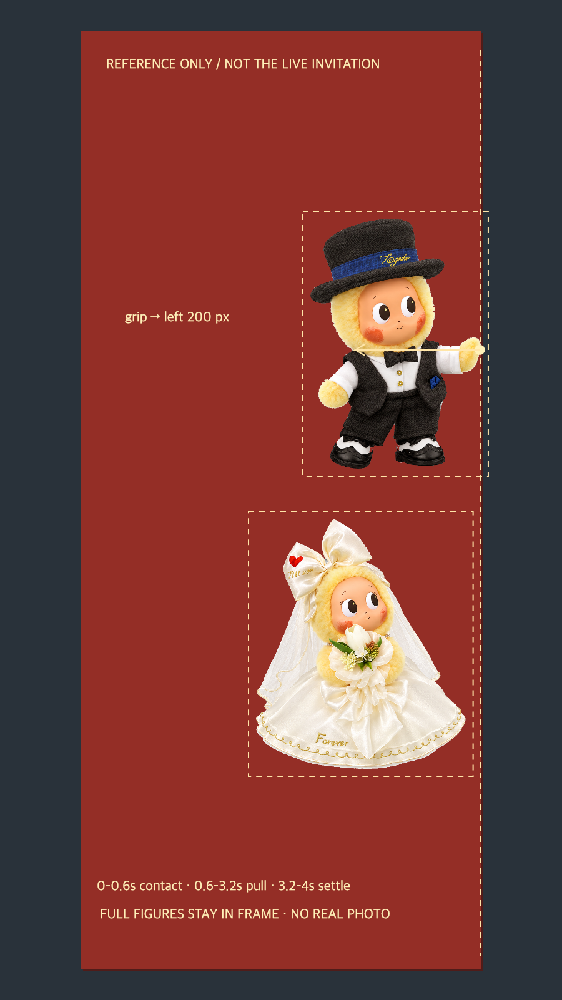

WEDDING / V10.87 / LOCAL PREFLIGHT先验证能接上，再花积分。
尚未放行生成
首帧排版与四秒动作稿已准备；真实视频抠像、手—纸同步及手机衔接仍未验证。本页没有提交生成按钮。

首帧候选：只有空白卡与两个角色，无真人照。外围是技术工作区，不是正式请柬留白。
检查图：男孩扶住右侧中部，向左短拉，女孩下方跟随。标注不会上传。四秒只做一件事
0–0.6秒贴稳 → 0.6–3.2秒发力短拉、女孩稍后跟随 → 3.2–4秒减速保持。不完整开卡，不飞走、不牵手、不生成星尾。
这次真正修正的衔接问题
第一段结束时手还在纸边，第二段必须先松手。选实际末帧续接，不能直接把“扶纸姿势”和“牵手飞走”硬拼。
需要视频文件完成的验证
- 白色领口、头纱和裙摆在整段抠像后不缺失、不闪烁。
- 每一帧的掌边与网页纸边一致，而不只是首尾碰上。
- 手机上播放不跳尺寸、不露工作区、不因滑动中断。
完整检查记录 · 已通过／未通过门槛 · 四秒英文提示词
没有新生成、没有消耗积分、没有修改或部署正式网页。静态排版不代表自然动画已经实现。